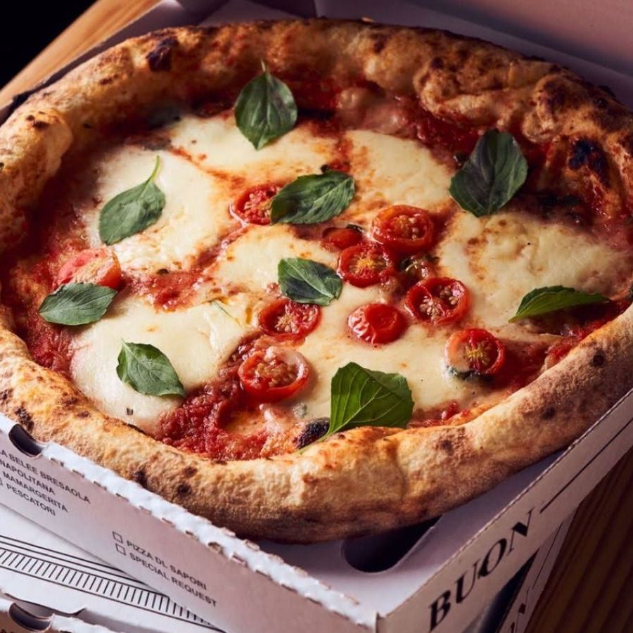
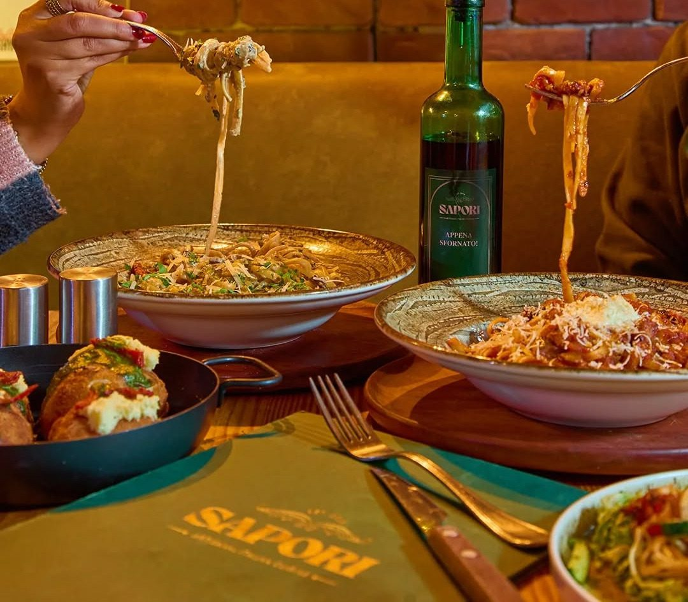
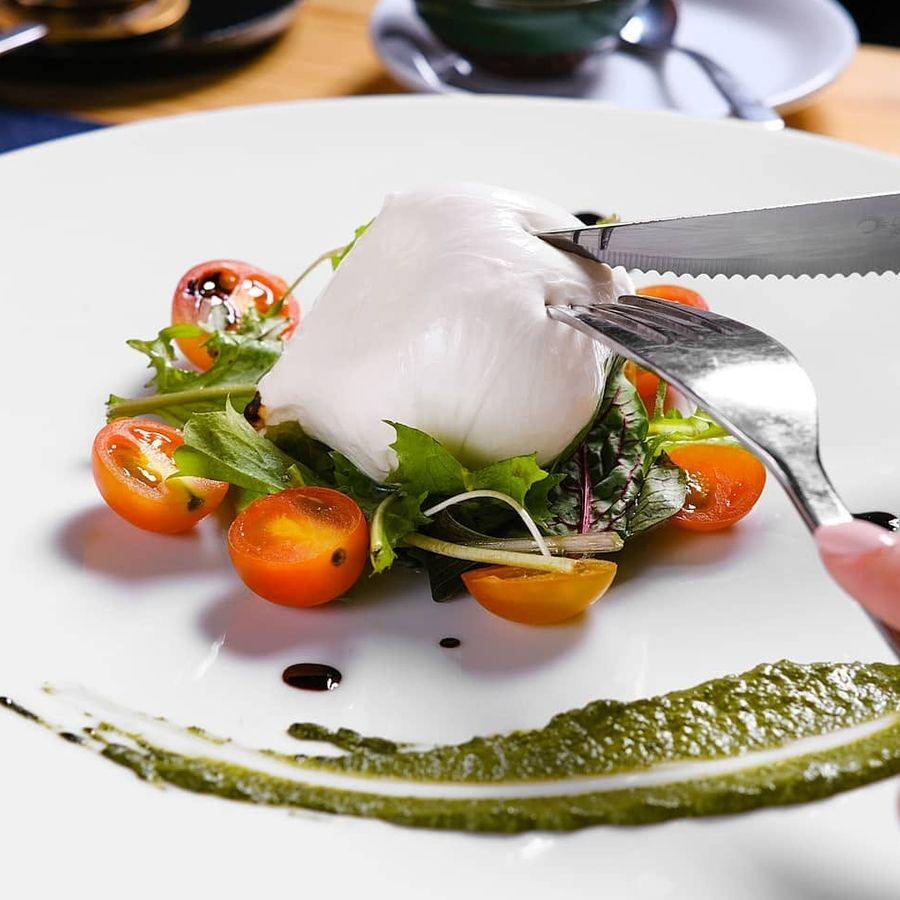
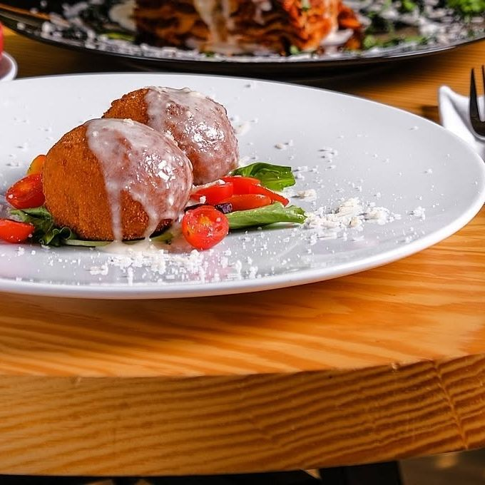
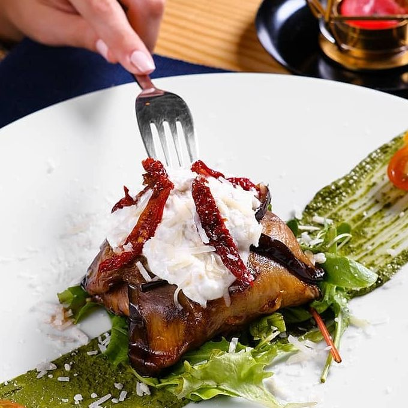
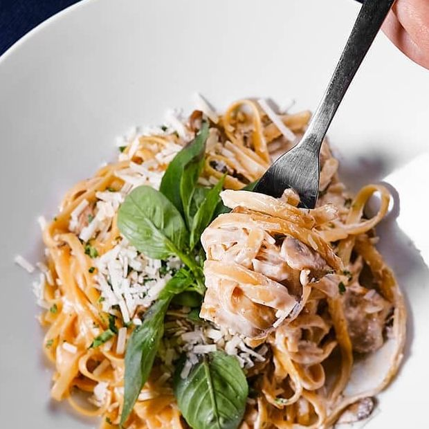
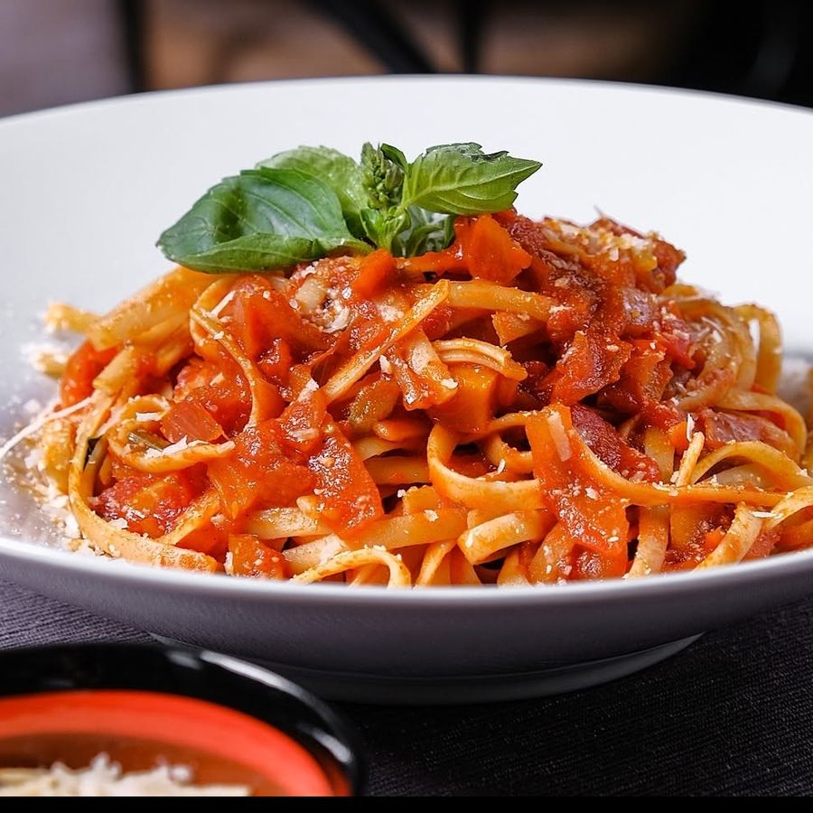

Pizza Mamargerita
Cherry tomatoes, homemade mozzarella, Italian basil, Sapori tomato sauce and extra virgin olive oil.
226.35
Prices in EGP.

Cherry tomatoes, homemade mozzarella, Italian basil, Sapori tomato sauce and extra virgin olive oil.
226.35
Fresh mozzarella di buffalo, fresh tomatoes, organic cherry tomatoes and Sapori pesto sauce.
180
Risotto balls stuffed with mozzarella, with a parmesan cheese cream.
202.85
Marinated eggplant, homemade mozzarella, stracciatella cheese, Sapori tomato sauce, fresh Italian basil and sun-dried tomatoes.
168.40
Italian fettuccine, fresh mushrooms, Italian parmesan shavings, Italian basil, garlic and Sapori white sauce.
226.35
Italian pasta, organic cherry tomatoes, Italian basil and Sapori tomato sauce.
159